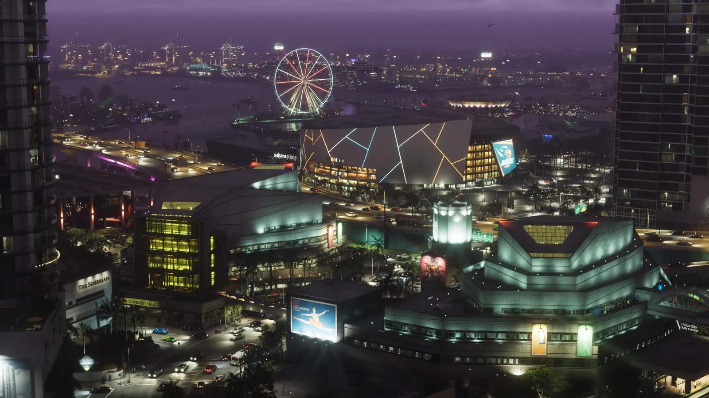

Дата выхода GTA 6: 19 ноября 2026 — во сколько, на чём и что было до этого
Опубликовано:

- GTA 6 выходит в четверг, 19 ноября 2026 — на PS5, PS5 Pro, Xbox Series X и Series S.
- Запуск — в 00:00 по местному времени региона: на турецком аккаунте это 00:00 по Москве, на украинском — 01:00, на польском — 02:00, на американском — 08:00.
- 9 ноября Take-Two сообщила: разработка GTA 6 завершена — игра «ушла на золото».
- Предзагрузка — с 10 ноября, нужно до 212 ГБ.
- Между GTA 5 (17.09.2013) и GTA 6 — 13 лет и два месяца, игру переносили дважды.
Когда и во сколько выходит GTA 6
Grand Theft Auto VI выходит 19 ноября 2026 года. Это четверг. Дату Rockstar Games объявила ещё 6 ноября 2025 года и с тех пор ни разу её не меняла: её повторили в Launch Trailer 15 октября 2026 года, в правилах предзагрузки 3 ноября и в отчёте Take-Two Interactive 9 ноября.
Важная деталь — во сколько. Единого мирового момента запуска нет. 3 ноября Rockstar опубликовала в службе поддержки статью о времени предзагрузки и выхода: GTA 6 откроется в полночь по местному времени во всех регионах — и на PlayStation 5, и на Xbox Series X|S. Поэтому первыми в игру попадут жители Новой Зеландии: у них полночь 19 ноября наступит, когда в Москве будет 14:00 18 ноября. Последними — Мексика и Центральная Америка.
На PlayStation 5 «местное время» — это время региона магазина, к которому привязан аккаунт, а не часовой пояс, в котором вы сидите. В PlayStation Store у каждой страны своё время разблокировки, и для больших стран с несколькими часовыми поясами оно одно на всю страну. Например, американский PS Store открывает игру в полночь по Нью-Йорку — в Лос-Анджелесе в это время ещё 21:00 18 ноября. Для игроков из России и СНГ это главное: у большинства аккаунты турецкие, польские, украинские, индийские или американские, и время запуска зависит именно от этого.
Время выхода по Москве: таблица
Мы пересчитали полночь 19 ноября в регионах, где чаще всего заводят аккаунты игроки из России, в московское время (UTC+3). Правило Rockstar — полночь по местному времени; конкретные часы по странам взяты из листингов PlayStation Store, которые собрали игровые сайты. Для Xbox Rockstar тоже говорит «полночь по местному», но поминутного расписания по странам ни Rockstar, ни Microsoft не публиковали.
| Регион аккаунта | Полночь 19 ноября там | По Москве |
|---|---|---|
| Новая Зеландия (первой в мире) | 00:00, 19 ноября | 14:00, 18 ноября |
| Япония, Южная Корея | 00:00, 19 ноября | 18:00, 18 ноября |
| Индия | 00:00, 19 ноября | 21:30, 18 ноября |
| Турция | 00:00, 19 ноября | 00:00, 19 ноября |
| Украина | 00:00, 19 ноября | 01:00, 19 ноября |
| Польша, Германия, большая часть Евросоюза | 00:00, 19 ноября | 02:00, 19 ноября |
| Великобритания | 00:00, 19 ноября | 03:00, 19 ноября |
| США (весь магазин — по Нью-Йорку) | 00:00, 19 ноября | 08:00, 19 ноября |
| Мексика и Центральная Америка (последними) | 00:00, 19 ноября | 09:00, 19 ноября |
Если у вас турецкий аккаунт PSN, всё просто: игра откроется ровно в полночь с 18 на 19 ноября по Москве — у Турции и Москвы одно и то же время. С индийским аккаунтом можно начать на два с половиной часа раньше, а с американским придётся ждать до утра. Предзагрузка при этом уже идёт: скачать игру заранее можно с 10 ноября (подробно — Предзагрузка GTA 6: с 10 ноября, до 212 ГБ — как скачать заранее и сколько места нужно).

На чём можно играть
| Платформа | GTA 6 19 ноября |
|---|---|
| PlayStation 5 и PS5 Pro | ✅ Да |
| Xbox Series X | ✅ Да |
| Xbox Series S | ✅ Да |
| PlayStation 4, Xbox One | ❌ Нет — игра только для нового поколения |
| ПК | ❌ Дата не объявлена |
| Nintendo Switch 2 | ❌ Не объявлялась |
9 ноября 2026 года гендиректора Take-Two Штрауса Зелника спросили про ПК, Switch 2 и диск. Он ответил, что такие новости «всегда приходят от наших лейблов», то есть объявлять их будет сама Rockstar. В октябре GamesBeat со ссылкой на свои источники писал, что ПК-версия запланирована на первый квартал 2027 года, — официального подтверждения нет. История ПК-версий прошлых игр и всё, что известно сейчас, — в статье GTA 6 на ПК: когда выйдет и что известно.
На старте GTA 6 — одиночная сюжетная игра. Отдельный онлайн-режим Rockstar пока не анонсировала; Bloomberg пишет, что он ожидается в 2027 году (GTA 6 Online: будет ли мультиплеер и когда).
Игра готова: «ушла на золото»
«Уйти на золото» — значит закончить разработку версии, которая выйдет в день релиза. Раньше в этот момент мастер-диск отправляли на завод. 9 ноября 2026 года, на последней перед релизом конференции для инвесторов, Штраус Зелник сказал прямо: Rockstar завершила разработку Grand Theft Auto VI. Это главный сигнал, что третьего переноса не будет.
В тот же день Take-Two сообщила, что предзаказы идут «намного выше» её собственных ожиданий и «продолжают достигать беспрецедентного уровня». Точных цифр компания не раскрыла — пообещала рассказать о продажах после выхода. По оценке аналитической компании Sensor Tower (её приводит Reuters), к 3 ноября по всему миру было оформлено около 7,71 миллиона цифровых предзаказов. Годовой прогноз Take-Two — около 8 миллиардов долларов чистых продаж, и почти всё в нём держится на одной игре.
Финальная сборка — не значит «без патчей». Rockstar пока ничего не говорила о патче первого дня, но у больших игр он почти всегда есть: до релиза разработчики продолжают исправлять ошибки, и исправления приходят обновлением в день запуска.
Как GTA 6 шла к релизу: полная хроника
| Дата | Что произошло |
|---|---|
| 17 сентября 2013 | Выходит GTA 5 — предыдущая часть серии. Она разойдётся тиражом более 200 миллионов копий. |
| 4 февраля 2022 | Rockstar впервые официально подтверждает: новая GTA «в активной разработке». |
| Сентябрь 2022 | Крупнейшая утечка в истории игр: в сеть попадают ранние ролики разработки GTA 6. |
| 4–5 декабря 2023 | Первый трейлер. Rockstar выпускает его на сутки раньше плана — после утечки. Заявлен 2025 год. За 24 часа — более 90 миллионов просмотров на YouTube, рекорд для видео не о музыке. |
| 2 мая 2025 | Первый перенос: на 26 мая 2026 года. |
| 6 мая 2025 | Второй трейлер. По данным Rockstar — более 475 миллионов просмотров на всех платформах за сутки, «самый большой запуск видео в истории». |
| 6 ноября 2025 | Второй перенос — на 19 ноября 2026. Rockstar извиняется: дополнительные месяцы нужны, чтобы отполировать игру. |
| 25 июня 2026 | Открываются предзаказы: Standard — $79,99, Ultimate — $99,99. |
| 27 августа 2026 | «Расширенный показ» — длинное видео с геймплеем («Расширенный показ» GTA 6: что показали за 26 минут — с таймкодами). |
| 15 октября 2026 | Третий трейлер — Launch Trailer (Трейлеры GTA 6: все видео, рекорды просмотров и музыка). |
| 3 ноября 2026 | Правила предзагрузки: с 10 ноября, до 212 ГБ (Предзагрузка GTA 6: с 10 ноября, до 212 ГБ — как скачать заранее и сколько места нужно). |
| 5 ноября 2026 | Launch Gallery — 39 новых официальных скриншотов. |
| 9 ноября 2026 | Take-Two: разработка завершена. Rockstar анонсирует концерт GTA 6: The Festival (GTA 6: The Festival — концерт в Майами 21 ноября: кто выступит и как туда попасть). |
| 10 ноября 2026 | Открывается предзагрузка. |
| 19 ноября 2026 | Выход GTA 6. |
По данным Bloomberg (материал Джейсона Шрайера от 14 октября 2026 года), руководители Rockstar объясняли переносы не одной большой технической катастрофой, а тем, что множество связанных систем игры — от толпы прохожих до полиции и транспорта — делалось дольше, чем планировали. Над GTA 6 работали 4711 человек в 12 офисах — почти вдвое больше, чем на момент выхода Red Dead Redemption 2.

Что будет в неделю релиза
- 10 ноября — предзагрузка для цифровых предзаказов (на PS5 — в полночь по местному времени, на Xbox — в 00:00 по Гринвичу, это 03:00 по Москве).
- 12 ноября — в магазинах появляются коробочные издания. Внутри не диск, а код для загрузки.
- 18 ноября — по данным инсайдера NateTheHate, которые независимо подтвердил Insider Gaming, в этот день снимается запрет на публикацию обзоров. Rockstar дату официально не называла. У GTA 5 и Red Dead Redemption 2 обзоры тоже выходили за день до релиза.
- 19 ноября — релиз. В этот же день на официальном сайте GTA VI можно будет бесплатно скачать постер с обложкой и карту Леониды; выходит альбом Grand Theft Auto VI: The Album (34 трека, Grand Theft Auto VI: The Album — 34 трека и уже вышедшие синглы).
- 20 ноября — последний день, когда за покупку дают бонус Vintage Vice City Pack (Издания и цены GTA 6: Standard, Ultimate и бонус предзаказа — что входит и стоит ли переплачивать).
- 21 ноября — концерт GTA 6: The Festival в Майами: Трэвис Скотт, Карди Би, Justice и другие (GTA 6: The Festival — концерт в Майами 21 ноября: кто выступит и как туда попасть).
- 11 декабря — выходит оригинальная музыка Justice к игре, 30 треков.
Как подготовиться к 19 ноября
- Освободите до 212 ГБ на консоли. На первой PS5 из 825 ГБ под игры доступно около 667 ГБ — GTA 6 займёт почти треть.
- Включите автозагрузку: на PS5 — «Автоматические загрузки», на Xbox — автообновления. Тогда игра скачается сама, даже если вы забудете.
- Проверьте, в каком регионе ваш аккаунт: от этого зависит, во сколько вы начнёте играть (таблица выше).
- Если покупаете в последний момент — учтите, что пополнение кошелька чужого региона может занять время (Как купить GTA 6 в России: аккаунт другого региона, пополнение, цены и подводные камни).
- Не читайте спойлеры: обзоры и первые стримы появятся 18–19 ноября, а сюжетные ролики — ещё раньше.
Частые вопросы
Когда выходит GTA 6?
19 ноября 2026 года, в четверг, на PS5 и Xbox Series X|S.
Во сколько выходит GTA 6 по Москве?
Зависит от региона аккаунта: на турецком — в 00:00 19 ноября, на индийском — в 21:30 18 ноября, на польском — в 02:00, на американском — в 08:00 19 ноября.
Перенесут ли GTA 6 ещё раз?
Очень маловероятно: 9 ноября Take-Two объявила, что разработка завершена.
Выйдет ли GTA 6 на PS4?
Нет, только PS5, PS5 Pro и Xbox Series X|S.
Когда выйдет GTA 6 на ПК?
Официальной даты нет. Сообщения о первом квартале 2027 года Rockstar не подтверждала.
Когда выйдут обзоры GTA 6?
По данным инсайдеров — 18 ноября, за день до релиза. Официально Rockstar дату не объявляла.
Источники: Rockstar Newswire — «Grand Theft Auto VI is now set to launch November 19, 2026» (06.11.2025); Rockstar Support — regional pre-load and release times (03.11.2026); Take-Two Interactive — результаты 2-го квартала 2027 ф. г. (09.11.2026); Variety, 09.11.2026 — интервью Ш. Зелника; Reuters, 09.11.2026 — данные Sensor Tower; Bloomberg Businessweek, Дж. Шрайер «The Making of Grand Theft Auto VI» (14.10.2026); Insider Gaming, 26.10.2026; GamesBeat, 13.10.2026; Variety / Guinness World Records — просмотры трейлера 1; The Hollywood Reporter — просмотры трейлера 2; листинги PlayStation Store по странам (по сводкам GTABoom, MyGTA).
Каждый день — одно сравнение: кадр игры рядом с реальным фото. Подписывайтесь:
YouTubeInstagramTikTok- Предзагрузка GTA 6: с 10 ноября, до 212 ГБ — как скачать заранее и сколько места нужно
- GTA 6 перед выходом: всё, что известно за неделю до релиза
- Издания и цены GTA 6: Standard, Ultimate и бонус предзаказа — что входит и стоит ли переплачивать
- Как мир готовится к GTA 6: отпуска, армия и закрытые компании